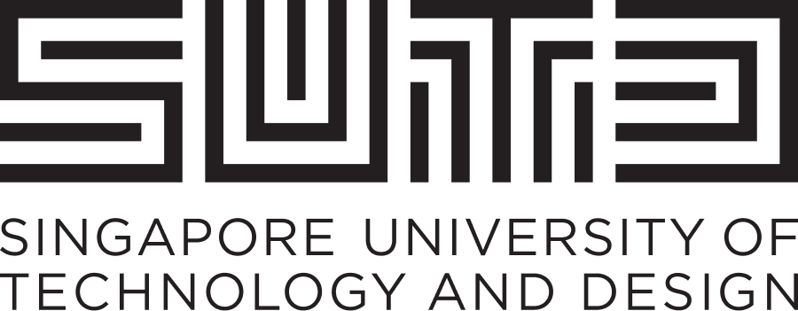

Singapore University of Technology and Design
Sept. 2026 – Dec. 2026
Singapore
Visiting Student · Research Assistant (RA)
Quadruped locomotion and parkour learning · Asst. Prof. Yihan Du & Dr. Shen Chen
Fully funded by the China Scholarship Council (CSC)